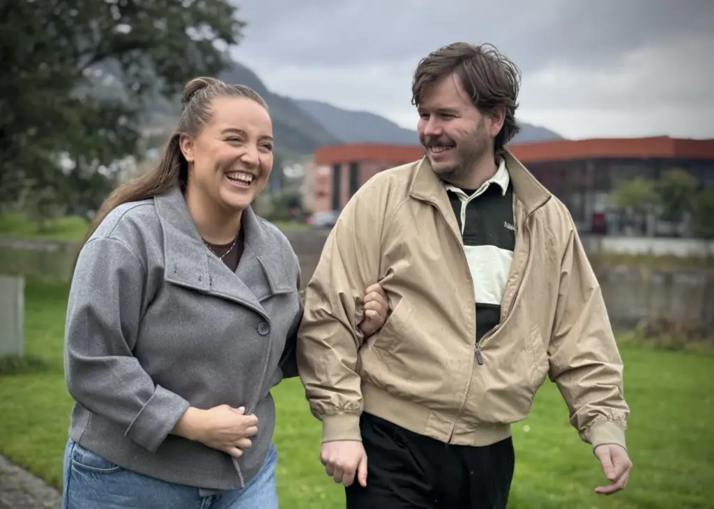
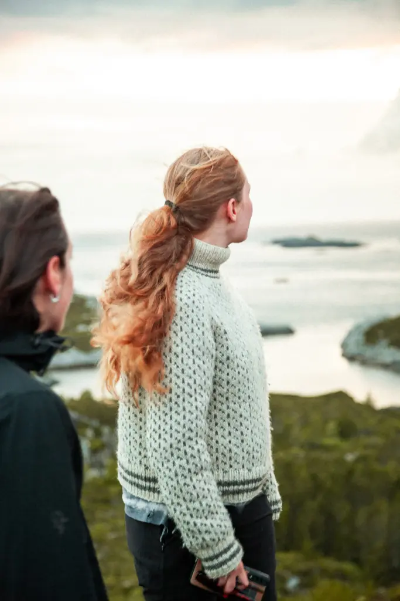
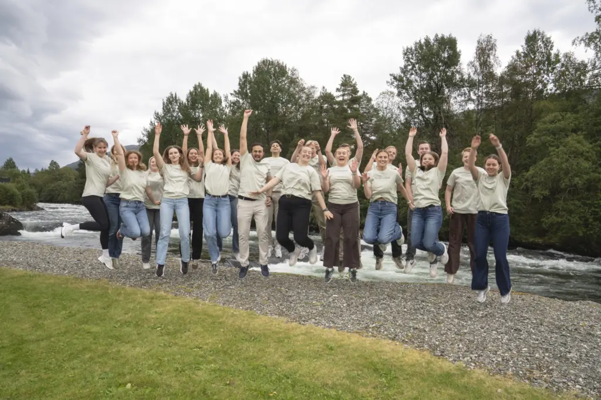
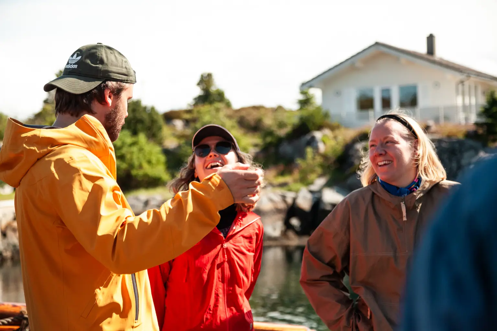

Aktuelt · Trainee
Sunnfjord vart augeopnar for Mikkel og Ayla
Først fekk Mikkel (28) ei traineestilling og flytta til Sunnfjord. Eitt år seinare gjorde Ayla (27) det same. No snusar sambuarane på småbruk.
For arbeidsgjevarar i Vestland
Framtidsfylket gjer bedrifter i Vestland synlege for framtidas arbeidstakarar — gjennom trainee, medlemskap, møteplassar og rekrutteringskommunikasjon. Spør svarpanelet: der får du svar medan du les, òg når alle her står i arbeid.
Framtidsfylket AS · Hafstadvegen 25, 6800 Førde · org.nr 992 403 896
Hei! Eg svarar med innhald frå framtidsfylket.no, slik at du slepp å vente på telefon eller e-post. Vel eit spørsmål nedanfor.
Skissa sender ingen data. I den ferdige løysinga går førespurnaden til post@framtidsfylket.no, og svaret kjem på e-post.
500 000
når vi ut til kvar månad
5000
abonnentar på nyheitsbrevet
700
søkarar til 25 traineestillingar i 2026
400
nyutdanna har starta som trainee gjennom 20 år
Tilbodet
Ønsker du fleire søkarar på ledige stillingar? Vil du løfte fram det som gjer bedrifta di til ein attraktiv arbeidsplass? Då kan vi i Framtidsfylket hjelpe deg.
Tilsett ein nyutdanna med driv og ny kompetanse. Framtidsfylket er anbefalt av bedrifter i Vestland gjennom 20 år.
Som medlem blir du synleg for framtidas arbeidstakarar i Vestland, og du får tilgang til eit unikt nettverk.
Møt jobbsøkarane på karrieremesse, få fagleg oppdatering på kursa våre eller delta på rekrutteringskonferanse.
Kva er det som gjer nettopp din arbeidsplass attraktiv? Vi hjelper deg med å finne det og løfte det fram.
Den gode stillingsannonsen kan bety alt. Vi hjelper deg med å finne gullet og utforme annonsen.
Korleis kan du bli betre på rekrutteringskommunikasjon? Vi har verktøyskassa og hjelper deg gjerne.
Traineeprogrammet
Ein trainee i Framtidsfylket har bachelor-, master- eller fagskuleutdanning og maks tre års arbeidserfaring. I eitt år jobbar traineen i ei bedrift i Vestland som er relevant for fagfeltet.

Slik jobbar vi
Vår jobb er å gjere deg synleg for folk som allereie er interesserte i arbeidslivet i Vestland — jobbsøkarar, heimeflyttarar, tilflyttarar og dei som søker livsstilen her.
Fleire søkarar, eit traineeår, ei karrieremesse eller eit løft i rekrutteringskommunikasjonen. Vi byrjar med behovet ditt.
Nettsida vår, sosiale medium, nyheitsbrev, artiklar, kampanjar og møtestadar — vi brukar kanalane der målgruppa allereie er.
Som medlem blir du løfta fram i kanalane våre, med rabatterte prisar på karrieremesser, konferansar og andre møteplassar.

«For meg var traineeåret ein fantastisk start på arbeidslivet. Eg fekk prøve ut både bedrifta og området under trygge rammer.»
Astrid Myren, SFE
«Når du kjem til ein ny plass, er det gull verdt å få eit nettverk med ein gong. I tillegg har du folka som jobbar i Framtidsfylket, viss du treng råd eller berre vil lufte tankar.»
Heine Urnes, Lotteri- og Stiftelsestilsynet
«Profesjonelt arrangement og perfekt lokasjon for ei karrieremesse. Vi fekk kontakt med ein del kvalifiserte kandidatar, mellom anna ein nyutdanna arkitekt.»
Børre Sundsøy, Helgesen Tekniske Bygg
Vestlandslivet
I Vestland kan du vere med og påverke utviklinga i bransjar som er avgjerande for Noreg og verda. Kvart år takkar erfarne og nyutdanna ja til eit arbeidsliv her. Dei kom for jobben, men blir for naturen, fritida, menneska og moglegheitene.


Aktuelt · Trainee
Først fekk Mikkel (28) ei traineestilling og flytta til Sunnfjord. Eitt år seinare gjorde Ayla (27) det same. No snusar sambuarane på småbruk.
Kontakt
Ring, skriv — eller bruk svarpanelet øvst i sida. Der får du svar med ein gong, og du kan sende ein førespurnad utan å fylle ut eit skjema i eit eige vindauge.
Opne svarpaneletTelefon
+47 990 17 852E-post
post@framtidsfylket.noBesøk
Hafstadvegen 25
6800 Førde
Organisasjon
Framtidsfylket AS
Org.nr 992 403 896